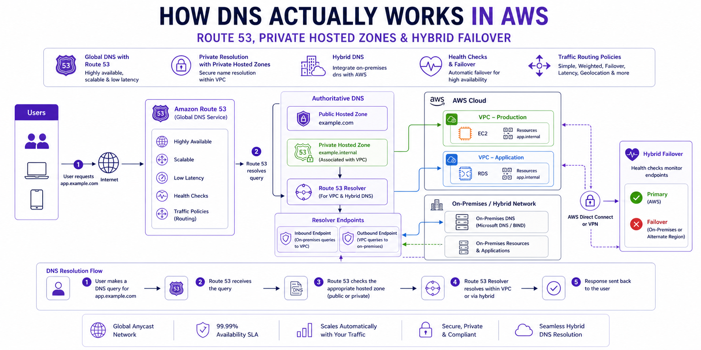

How DNS Actually Works in AWS: Route 53, Private Hosted Zones & Hybrid Failover
AWS Networking Series | Part 5 — Building secure, cost-optimised, cloud-native infrastructure on AWS

TL;DR Comparison
| Feature | Public Hosted Zone | Private Hosted Zone | Resolver Endpoints |
|---|---|---|---|
| Resolves from | Internet | Within VPC only | On-premises ↔ AWS |
| Visibility | Public | Private (VPC-scoped) | Conditional forwarding |
| Use case | Public websites & APIs | Internal service discovery | Hybrid DNS resolution |
| Cost | $0.50/zone/month + queries | $0.50/zone/month + queries | $0.125/endpoint/hour |
| DNSSEC | ✅ Supported | ❌ Not supported | N/A |
| Health checks | ✅ Supported | ✅ Supported | N/A |
| Cross-account | Via delegation | ✅ Via RAM | ✅ Via RAM |
Introduction
DNS is the one piece of AWS infrastructure that engineers interact with every single day — and understand the least deeply. You create a hosted zone, add an A record, it works. But then you try to resolve an internal service name from on-premises, or a Lambda in VPC A can't resolve a hostname in VPC B, or your failover routing isn't triggering when it should — and suddenly the abstraction breaks down.
In this post we go end-to-end: how the AWS DNS resolver actually works under the hood, how Private Hosted Zones enable internal service discovery, how Resolver Endpoints bridge AWS and on-premises DNS, and how to build a genuinely reliable hybrid failover architecture with Route 53 health checks. Every concept has working Terraform.
1. The AWS DNS Resolver — How It Actually Works
The VPC DNS Server
Every VPC gets a built-in DNS server automatically. It lives at the VPC base CIDR + 2 — always. For a VPC with CIDR 10.0.0.0/16, the DNS server is at 10.0.0.2. This is the Amazon Route 53 Resolver, and it handles all DNS queries from resources within the VPC.
EC2 (10.0.1.50) → DNS query → 10.0.0.2 (Route 53 Resolver)
↓
Is this a Private Hosted Zone?
├── YES → Return private record
└── NO → Forward to Route 53 public DNS
↓
Return public record or NXDOMAINThis is why enableDnsSupport = true matters — without it, the +2 resolver is disabled and all DNS queries from your VPC fail silently. And enableDnsHostnames = true ensures EC2 instances receive DNS hostnames (like ip-10-0-1-50.eu-west-1.compute.internal) rather than just IP addresses.
resource "aws_vpc" "main" {
cidr_block = "10.0.0.0/16"
enable_dns_support = true # Enables the +2 resolver — NEVER disable this
enable_dns_hostnames = true # Assigns DNS hostnames to EC2 instances
tags = { Name = "main-vpc" }
}The Resolution Order
When a resource in your VPC makes a DNS query, the Route 53 Resolver checks in this exact order:
- Private Hosted Zones associated with this VPC — checked first, always
- Resolver Rules (forwarding rules) — if a rule matches the domain, forward to the specified DNS server
- Route 53 Public DNS — if no private zone or rule matches, resolve publicly
- NXDOMAIN — if the name doesn't exist anywhere
This order is critical. If you have a Private Hosted Zone for internal.company.com and a Resolver Rule forwarding company.com to your on-premises DNS, a query for service.internal.company.com will hit the Private Hosted Zone first — not the forwarding rule. Understanding this prevents hours of DNS debugging.
2. Public Hosted Zones — The Internet-Facing Foundation
How It Works
A Public Hosted Zone is a container for DNS records that answer queries from the public internet. When you register a domain or delegate a subdomain to Route 53, AWS assigns four name servers to your zone. All public DNS resolvers worldwide learn to query those name servers for your domain.
# Public Hosted Zone
resource "aws_route53_zone" "public" {
name = "ankushpanday.com"
tags = { Name = "public-zone-ankushpanday" }
}
# A Record — apex domain pointing to ALB
resource "aws_route53_record" "apex" {
zone_id = aws_route53_zone.public.zone_id
name = "ankushpanday.com"
type = "A"
alias {
name = aws_lb.main.dns_name
zone_id = aws_lb.main.zone_id
evaluate_target_health = true # Enables health-check-based failover
}
}
# CNAME for www subdomain
resource "aws_route53_record" "www" {
zone_id = aws_route53_zone.public.zone_id
name = "www.ankushpanday.com"
type = "CNAME"
ttl = 300
records = ["ankushpanday.com"]
}Alias Records vs CNAME — The Important Distinction
This is one of the most commonly confused Route 53 concepts:
| Alias Record | CNAME Record | |
|---|---|---|
| Works at apex domain | ✅ Yes (company.com) | ❌ No (RFC prohibits) |
| Targets | AWS resources only (ALB, CloudFront, S3, etc.) | Any hostname |
| Query cost | Free for AWS targets | Charged per query |
| Health check integration | ✅ Native | ❌ Requires separate check |
| TTL | Managed by AWS | You control it |
Always use Alias records when pointing to AWS resources. Never use a CNAME at the apex domain — it violates DNS standards and Route 53 will reject it.
DNSSEC — Protecting Against DNS Spoofing
Route 53 supports DNSSEC signing for public hosted zones. This cryptographically signs your DNS records so resolvers can verify responses haven't been tampered with:
# Enable DNSSEC signing
resource "aws_route53_key_signing_key" "main" {
hosted_zone_id = aws_route53_zone.public.id
key_management_service_arn = aws_kms_key.dnssec.arn
name = "dnssec-ksk"
}
resource "aws_route53_hosted_zone_dnssec" "main" {
hosted_zone_id = aws_route53_key_signing_key.main.hosted_zone_id
depends_on = [aws_route53_key_signing_key.main]
}
# KMS key for DNSSEC — must be in us-east-1 regardless of your region
resource "aws_kms_key" "dnssec" {
provider = aws.us_east_1 # DNSSEC KMS keys must be in us-east-1
customer_master_key_spec = "ECC_NIST_P256"
deletion_window_in_days = 7
key_usage = "KEY_AGREEMENT"
policy = jsonencode({
Statement = [
{
Effect = "Allow"
Principal = { Service = "dnssec-route53.amazonaws.com" }
Action = ["kms:DescribeKey", "kms:GetPublicKey", "kms:Sign"]
Resource = "*"
},
{
Effect = "Allow"
Principal = { AWS = "arn:aws:iam::${var.account_id}:root" }
Action = "kms:*"
Resource = "*"
}
]
})
}Architect's Warning:
DNSSEC KMS keys must always be created in us-east-1 regardless of where your infrastructure runs. This is a hard AWS requirement — Route 53 is a global service fronted from us-east-1.
3. Private Hosted Zones — Internal Service Discovery
What They Are
A Private Hosted Zone (PHZ) is a DNS namespace that only resolves within one or more associated VPCs. Resources outside those VPCs — including the public internet — get NXDOMAIN for names in your PHZ. This is how you implement internal service discovery without any exposure to the internet.
From internet: service.internal.company.com → NXDOMAIN
From associated VPC: service.internal.company.com → 10.0.1.50 ✅Basic Private Hosted Zone
# Private Hosted Zone
resource "aws_route53_zone" "private" {
name = "internal.company.com"
vpc {
vpc_id = aws_vpc.main.id # Associate with your VPC
}
tags = { Name = "private-zone-internal" }
}
# Internal service record
resource "aws_route53_record" "api_service" {
zone_id = aws_route53_zone.private.zone_id
name = "api.internal.company.com"
type = "A"
ttl = 60 # Short TTL for internal services — allows fast failover
records = [aws_lb.internal_alb.dns_name]
}
# Database endpoint
resource "aws_route53_record" "db_primary" {
zone_id = aws_route53_zone.private.zone_id
name = "db.internal.company.com"
type = "CNAME"
ttl = 60
records = [aws_db_instance.primary.address]
}Associating a PHZ with Multiple VPCs
This is the pattern for shared internal DNS across multiple VPCs — and it's more complex than it looks:
# Primary association is in the zone resource
resource "aws_route53_zone" "private" {
name = "internal.company.com"
vpc {
vpc_id = aws_vpc.main.id
}
}
# Additional VPCs must be associated separately
# IMPORTANT: If VPCs are in different accounts, the secondary account
# must authorize the association before it can be made
resource "aws_route53_vpc_association_authorization" "secondary" {
zone_id = aws_route53_zone.private.id
vpc_id = aws_vpc.secondary.id # VPC in another account
}
# In the secondary account — creates the actual association
resource "aws_route53_zone_association" "secondary" {
zone_id = aws_route53_zone.private.id
vpc_id = aws_vpc.secondary.id
depends_on = [aws_route53_vpc_association_authorization.secondary]
}Critical gotcha:
A PHZ can only be created with one VPC. Additional VPCs — even in the same account — must be associated using aws_route53_zone_association separately. Engineers who try to add multiple vpc {} blocks in the zone resource will get a Terraform error.
Cross-Account PHZ Sharing via AWS RAM
For large organisations with many accounts, managing individual zone associations becomes unwieldy. AWS RAM lets you share PHZs across the organisation:
# Share the PHZ via RAM (in the account that owns the zone)
resource "aws_ram_resource_share" "dns" {
name = "shared-private-dns"
allow_external_principals = false
tags = { Name = "dns-ram-share" }
}
resource "aws_ram_resource_association" "phz" {
resource_arn = aws_route53_zone.private.arn
resource_share_arn = aws_ram_resource_share.dns.arn
}
resource "aws_ram_principal_association" "org" {
principal = data.aws_organizations_organization.main.arn
resource_share_arn = aws_ram_resource_share.dns.arn
}4. Route 53 Resolver Endpoints — Bridging AWS and On-Premises
The Problem They Solve
Without Resolver Endpoints, DNS is isolated:
- Resources in your VPC can resolve
internal.company.com(via PHZ) - Resources on-premises cannot — they query your corporate DNS server, which has no knowledge of AWS PHZs
- AWS resources cannot resolve on-premises hostnames like
ldap.corp.company.com
Resolver Endpoints are the bridge. They are ENIs deployed in your VPC that accept DNS queries from — or forward queries to — external DNS servers.
Two Types of Endpoints
Inbound Resolver Endpoint — on-premises DNS servers forward queries to this endpoint, which resolves them against your PHZs.
Outbound Resolver Endpoint — AWS resources forward queries for specific domains to your on-premises DNS server.
On-premises server → Inbound Endpoint → Route 53 Resolver → PHZ → IP returned
AWS resource → Route 53 Resolver → Outbound Endpoint → Corporate DNS → IP returnedFull Resolver Endpoint Terraform
# Security group for resolver endpoints
resource "aws_security_group" "resolver" {
name = "resolver-endpoints-sg"
description = "DNS traffic for Route 53 Resolver Endpoints"
vpc_id = aws_vpc.main.id
ingress {
from_port = 53
to_port = 53
protocol = "tcp"
cidr_blocks = ["10.0.0.0/8"] # All internal RFC1918 ranges
}
ingress {
from_port = 53
to_port = 53
protocol = "udp"
cidr_blocks = ["10.0.0.0/8"]
}
egress {
from_port = 0
to_port = 0
protocol = "-1"
cidr_blocks = ["0.0.0.0/0"]
}
tags = { Name = "resolver-sg" }
}
# Inbound Resolver Endpoint — on-premises can query AWS PHZs
resource "aws_route53_resolver_endpoint" "inbound" {
name = "inbound-resolver"
direction = "INBOUND"
security_group_ids = [aws_security_group.resolver.id]
# Deploy one ENI per AZ for resilience
ip_address {
subnet_id = aws_subnet.private["eu-west-1a"].id
}
ip_address {
subnet_id = aws_subnet.private["eu-west-1b"].id
}
ip_address {
subnet_id = aws_subnet.private["eu-west-1c"].id
}
tags = { Name = "inbound-resolver" }
}
# Outbound Resolver Endpoint — AWS can forward queries to on-premises DNS
resource "aws_route53_resolver_endpoint" "outbound" {
name = "outbound-resolver"
direction = "OUTBOUND"
security_group_ids = [aws_security_group.resolver.id]
ip_address {
subnet_id = aws_subnet.private["eu-west-1a"].id
}
ip_address {
subnet_id = aws_subnet.private["eu-west-1b"].id
}
ip_address {
subnet_id = aws_subnet.private["eu-west-1c"].id
}
tags = { Name = "outbound-resolver" }
}
# Forwarding Rule — forward corp.company.com queries to on-premises DNS
resource "aws_route53_resolver_rule" "corp_forward" {
domain_name = "corp.company.com"
name = "forward-to-onprem"
rule_type = "FORWARD"
resolver_endpoint_id = aws_route53_resolver_endpoint.outbound.id
# Target your on-premises DNS servers — use two for resilience
target_ip {
ip = "192.168.1.10" # Primary corporate DNS
port = 53
}
target_ip {
ip = "192.168.1.11" # Secondary corporate DNS
port = 53
}
tags = { Name = "corp-forwarding-rule" }
}
# Associate the rule with your VPC
resource "aws_route53_resolver_rule_association" "corp" {
resolver_rule_id = aws_route53_resolver_rule.corp_forward.id
vpc_id = aws_vpc.main.id
}
# Share the rule across the AWS Organisation via RAM
resource "aws_ram_resource_association" "resolver_rule" {
resource_arn = aws_route53_resolver_rule.corp_forward.arn
resource_share_arn = aws_ram_resource_share.dns.arn
}Architect's Rule:
Always deploy Resolver Endpoint ENIs in at least two AZs. A single-AZ endpoint means an AZ failure takes down all hybrid DNS resolution. For production, use three AZs matching your VPC subnet layout.
On-Premises DNS Server Configuration
After deploying the inbound endpoint, configure your corporate DNS server to forward AWS zone queries to the inbound endpoint IPs. The exact configuration depends on your DNS server:
BIND (named.conf):
zone "internal.company.com" {
type forward;
forwarders {
10.0.1.15; # Inbound endpoint IP in eu-west-1a
10.0.2.15; # Inbound endpoint IP in eu-west-1b
};
forward only;
};Windows DNS (PowerShell):
Add-DnsServerConditionalForwarderZone `
-Name "internal.company.com" `
-MasterServers 10.0.1.15, 10.0.2.15 `
-PassThru5. Route 53 Health Checks & Failover Routing
How Health Checks Work
Route 53 health checkers are distributed globally across 15+ AWS edge locations. They independently probe your endpoints every 10 or 30 seconds. A health check fails when a configurable threshold of these checkers report failure — by default, 3 out of 5 checkers must fail before the health check is considered unhealthy.
# HTTP health check against your primary ALB
resource "aws_route53_health_check" "primary" {
fqdn = "api.ankushpanday.com"
port = 443
type = "HTTPS"
resource_path = "/health"
failure_threshold = 3 # 3 consecutive failures before unhealthy
request_interval = 10 # Check every 10 seconds (fast — costs more)
tags = { Name = "primary-health-check" }
}
# TCP health check for non-HTTP endpoints
resource "aws_route53_health_check" "db_proxy" {
ip_address = aws_db_proxy.main.endpoint
port = 5432
type = "TCP"
failure_threshold = 2
request_interval = 30 # Standard interval — lower cost
tags = { Name = "db-proxy-health-check" }
}
# Calculated health check — aggregates multiple child checks
resource "aws_route53_health_check" "composite" {
type = "CALCULATED"
child_health_threshold = 2 # At least 2 child checks must pass
child_healthchecks = [
aws_route53_health_check.primary.id,
aws_route53_health_check.db_proxy.id
]
tags = { Name = "composite-health-check" }
}Active-Passive Failover — Primary + Secondary Region
This is the most common enterprise pattern: a primary region handles all traffic, and a secondary region takes over if the primary becomes unhealthy:
# PRIMARY record — eu-west-1 ALB (active)
resource "aws_route53_record" "primary" {
zone_id = aws_route53_zone.public.zone_id
name = "api.ankushpanday.com"
type = "A"
set_identifier = "primary"
failover_routing_policy {
type = "PRIMARY"
}
alias {
name = aws_lb.eu_west_1.dns_name
zone_id = aws_lb.eu_west_1.zone_id
evaluate_target_health = true
}
health_check_id = aws_route53_health_check.primary.id
}
# SECONDARY record — us-east-1 ALB (passive, receives traffic only on failover)
resource "aws_route53_record" "secondary" {
zone_id = aws_route53_zone.public.zone_id
name = "api.ankushpanday.com"
type = "A"
set_identifier = "secondary"
failover_routing_policy {
type = "SECONDARY"
}
alias {
name = aws_lb.us_east_1.dns_name
zone_id = aws_lb.us_east_1.zone_id
evaluate_target_health = true
}
# No health_check_id on secondary — Route 53 always keeps this as fallback
}Weighted Routing — Blue/Green & Canary Deployments
Weighted routing distributes traffic by percentage. This is the Route 53-native way to do canary deployments or gradual traffic shifting during blue/green deployments:
# Blue environment — 90% of traffic
resource "aws_route53_record" "blue" {
zone_id = aws_route53_zone.public.zone_id
name = "api.ankushpanday.com"
type = "A"
set_identifier = "blue"
weighted_routing_policy {
weight = 90
}
alias {
name = aws_lb.blue.dns_name
zone_id = aws_lb.blue.zone_id
evaluate_target_health = true
}
}
# Green environment — 10% canary traffic
resource "aws_route53_record" "green" {
zone_id = aws_route53_zone.public.zone_id
name = "api.ankushpanday.com"
type = "A"
set_identifier = "green"
weighted_routing_policy {
weight = 10
}
alias {
name = aws_lb.green.dns_name
zone_id = aws_lb.green.zone_id
evaluate_target_health = true
}
}Architect's Tip:
Set weight to 0 to completely drain traffic from an environment without deleting the record. This is safer than deletion because the record stays in place for instant rollback — just set the weight back to the original value.
Latency-Based Routing — Serve from the Nearest Region
Latency routing directs users to the AWS region with the lowest measured network latency — not geographic proximity, but actual measured round-trip time:
# eu-west-1 — serves European users
resource "aws_route53_record" "eu" {
zone_id = aws_route53_zone.public.zone_id
name = "api.ankushpanday.com"
type = "A"
set_identifier = "eu-west-1"
latency_routing_policy {
region = "eu-west-1"
}
alias {
name = aws_lb.eu.dns_name
zone_id = aws_lb.eu.zone_id
evaluate_target_health = true
}
health_check_id = aws_route53_health_check.eu.id
}
# us-east-1 — serves North American users
resource "aws_route53_record" "us" {
zone_id = aws_route53_zone.public.zone_id
name = "api.ankushpanday.com"
type = "A"
set_identifier = "us-east-1"
latency_routing_policy {
region = "us-east-1"
}
alias {
name = aws_lb.us.dns_name
zone_id = aws_lb.us.zone_id
evaluate_target_health = true
}
health_check_id = aws_route53_health_check.us.id
}Common misconception:
Latency routing does NOT mean "route to the geographically closest region." AWS measures actual network latency from the user's resolver to each region and routes accordingly. A user in South Africa may be routed to eu-west-1 instead of af-south-1 if latency measurements favour it.
6. Advanced Pattern: Centralised DNS in a Multi-Account Organisation
The enterprise-standard pattern: one central DNS account owns all PHZs and Resolver Endpoints. Spoke accounts associate their VPCs via RAM-shared rules and zones. No spoke account manages DNS directly.
DNS Account (central)
├── Private Hosted Zones (internal.company.com, etc.)
├── Inbound Resolver Endpoint (on-premises → AWS)
├── Outbound Resolver Endpoint (AWS → on-premises)
├── Resolver Rules (forwarding rules for corp.company.com)
└── RAM shares → All spoke accounts
Spoke Account VPCs
├── No local PHZs
├── No local Resolver Endpoints
├── RAM-shared Resolver Rule applied to VPC
└── RAM-shared PHZ associated with VPC# In the DNS account — share resolver rules org-wide
resource "aws_ram_resource_share" "dns_central" {
name = "central-dns-share"
allow_external_principals = false
tags = { Name = "central-dns-ram" }
}
resource "aws_ram_resource_association" "forwarding_rule" {
resource_arn = aws_route53_resolver_rule.corp_forward.arn
resource_share_arn = aws_ram_resource_share.dns_central.arn
}
resource "aws_ram_principal_association" "org_dns" {
principal = data.aws_organizations_organization.main.arn
resource_share_arn = aws_ram_resource_share.dns_central.arn
}
# In each spoke account — associate the shared rule with the local VPC
resource "aws_route53_resolver_rule_association" "spoke" {
resolver_rule_id = var.shared_resolver_rule_id # From DNS account via RAM
vpc_id = aws_vpc.spoke.id
}Why centralise DNS?
One inbound endpoint serves all accounts — on-premises only needs to know two IP addresses to forward to, not one per account. Resolver rule changes propagate instantly to all spoke accounts. PHZ records are managed in one place, not spread across 50 account-level zones.
7. Cost Deep-Dive
Route 53 costs are often overlooked until they appear on the bill. Here's the full breakdown:
| Component | Cost |
|---|---|
| Public Hosted Zone | $0.50/zone/month |
| Private Hosted Zone | $0.50/zone/month per region |
| DNS Queries (first 1B/month) | $0.40 per million |
| DNS Queries (over 1B/month) | $0.20 per million |
| Health Checks (AWS endpoints) | $0.50/check/month |
| Health Checks (non-AWS endpoints) | $0.75/check/month |
| Health Check with fast interval (10s) | Additional $1.00/check/month |
| Resolver Endpoint | $0.125/hour per endpoint (~$91/month) |
| Resolver DNS Queries | $0.40 per million |
Cost Trap: Resolver Endpoints
Two Resolver Endpoints (one inbound, one outbound) at $0.125/hour each = $182/month before any query charges. This is the most common DNS cost surprise. In a multi-account setup, the centralised pattern amortises this across all accounts — one pair of endpoints serving 50 accounts is vastly more cost-efficient than each account running its own.
Cost Trap: High-Volume PHZ Queries
For a service handling 100M internal DNS queries/month:
100M queries × $0.40/million = $40/month per PHZIf you have 20 PHZs, that's $800/month in query charges alone. Strategies to reduce this:
- Increase DNS TTL for stable records (e.g., database endpoints that rarely change) from 60s to 300s
- Use VPC-level DNS caching via Route 53 Resolver DNS Firewall's caching feature
- Consolidate zones — one
internal.company.comzone with many records is cheaper than 20 granular zones with few records each
8. The Decision Framework
Do you need DNS to resolve from the public internet?
└── YES → Public Hosted Zone
Do you need DNS only within your VPC(s)?
└── YES → Private Hosted Zone
├── Single VPC? → Associate directly in zone resource
├── Multiple VPCs, same account? → aws_route53_zone_association
└── Multiple accounts? → RAM share or cross-account association
Do on-premises servers need to resolve AWS private names?
└── YES → Inbound Resolver Endpoint
└── Configure conditional forwarder on corporate DNS → endpoint IPs
Do AWS resources need to resolve on-premises names?
└── YES → Outbound Resolver Endpoint + Forwarding Rule for corp domain
Do you need automatic failover between regions?
└── YES → Health Checks + Failover Routing Policy
├── RTO < 30s? → 10s health check interval
└── Cost-sensitive? → 30s interval + CloudWatch alarm-based check
Do you need traffic distribution?
├── By percentage? → Weighted Routing (canary/blue-green)
├── By latency? → Latency-Based Routing
├── By geography? → Geolocation or Geoproximity Routing
└── All-active multi-region? → Latency + Health Checks combined9. Common Mistakes & Anti-Patterns
Mistake 1: Using Short TTLs Everywhere
A 60-second TTL on a record that never changes means your VPC generates 1,440 DNS queries per resource per day for that record. For 1,000 EC2 instances querying a stable database record, that's 1.44M unnecessary queries/day = $17.28/month wasted. Use 300s for stable records, 60s only for records that need fast failover.
Mistake 2: One PHZ Per Service
Engineers sometimes create api.internal.company.com, db.internal.company.com, and cache.internal.company.com as separate PHZs. Each costs $0.50/month and has separate query pricing. Put all internal records in one internal.company.com PHZ — records are free, zones are not.
Mistake 3: Forgetting evaluate_target_health = true on Alias Records
Without this, Route 53 returns the ALB's DNS name even if all targets behind it are unhealthy. The ALB is "up" from Route 53's perspective — but all traffic hits a 502. Always set this to true for ALB, NLB, and CloudFront alias records.
Mistake 4: Single-AZ Resolver Endpoints
A Resolver Endpoint with one IP in one AZ fails completely if that AZ has issues. Always deploy at least two IPs in two AZs. The cost difference is minimal — you're paying per-endpoint, not per-IP.
Mistake 5: Not Enabling Query Logging for PHZs
You cannot debug DNS resolution issues without query logs. Enable them — the S3 storage cost for DNS logs is negligible compared to the debugging value:
resource "aws_route53_resolver_query_log_config" "main" {
name = "vpc-dns-query-logs"
destination_arn = aws_s3_bucket.dns_logs.arn
}
resource "aws_route53_resolver_query_log_config_association" "main" {
resolver_query_log_config_id = aws_route53_resolver_query_log_config.main.id
resource_id = aws_vpc.main.id
}Mistake 6: Split-Horizon DNS Not Planned Upfront
Split-horizon means the same domain name resolves to different IPs depending on where the query originates — a private IP from within your VPC, a public IP from the internet. This is a very common requirement (e.g., api.company.com → 10.0.1.50 internally, 52.x.x.x externally) and is implemented by having both a public and private hosted zone for the same domain. Plan for this at zone creation time — retrofitting it is painful.
# Public zone — internet sees this
resource "aws_route53_zone" "public" {
name = "api.company.com"
}
# Private zone — VPC sees this (same name, different records)
resource "aws_route53_zone" "private_split" {
name = "api.company.com"
vpc {
vpc_id = aws_vpc.main.id
}
}
# Public record → ALB public DNS
resource "aws_route53_record" "public_api" {
zone_id = aws_route53_zone.public.zone_id
name = "api.company.com"
type = "A"
alias {
name = aws_lb.public.dns_name
zone_id = aws_lb.public.zone_id
evaluate_target_health = true
}
}
# Private record → internal ALB private IP
resource "aws_route53_record" "private_api" {
zone_id = aws_route53_zone.private_split.zone_id
name = "api.company.com"
type = "A"
ttl = 60
records = [aws_lb.internal.dns_name]
}Architecture Decision Matrix
| Requirement | Public Hosted Zone | Private Hosted Zone | Resolver Endpoints |
|---|---|---|---|
| Public internet DNS | ✅ Required | ❌ Not visible | ❌ N/A |
| Internal service discovery | ❌ Exposed publicly | ✅ Best choice | ❌ N/A |
| On-premises → AWS resolution | ❌ Public only | ❌ Not reachable | ✅ Inbound endpoint |
| AWS → On-premises resolution | ❌ N/A | ❌ N/A | ✅ Outbound + rule |
| Multi-VPC internal DNS | ❌ N/A | ✅ Multi-VPC association | ❌ N/A |
| Cross-account DNS | ❌ N/A | ✅ RAM share | ✅ RAM share rules |
| Automatic failover | ✅ Health checks | ✅ Health checks | ❌ N/A |
| Split-horizon DNS | ✅ Public side | ✅ Private side | ❌ N/A |
| DNSSEC | ✅ Supported | ❌ Not supported | ❌ N/A |
| Cost | $0.50/zone + queries | $0.50/zone + queries | $0.125/endpoint/hr |
The Golden Rule:
Public Hosted Zones for anything that faces the internet. Private Hosted Zones for internal service discovery within VPCs. Resolver Endpoints the moment you need DNS to cross the AWS-to-on-premises boundary. And always centralise your DNS architecture in a dedicated DNS account — you cannot retrofit centralised DNS into a 50-account organisation without significant pain.